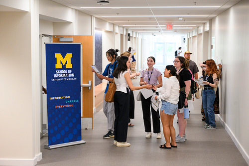
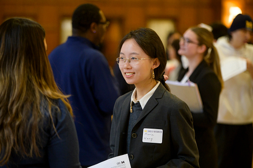

Understanding the Interview Process
Interviews are your chance to demonstrate not just your qualifications, but also your fit for a role or program. Most employers and graduate programs use interviews to learn more about your experiences, skills, and goals. Understanding the structure - whether it's in-person, virtual, one-on-one, or panel -will help you better prepare and present yourself with confidence.
Common Interview Questions & How to Respond
While every interview is unique, some questions are almost always asked. Be ready to talk about your background, explain why you're interested in the position, and discuss your strengths and areas for growth. Practice using the STAR method (Situation, Task, Action, Result) to answer behavioral questions clearly and effectively. Remember, the interview is also an opportunity for you to ask thoughtful questions about the organization or role.
Some Important Guides:
Interview Preparation and Follow-Up Checklist
Before the Interview
- Research the organization- its mission, culture, and recent news.
- Review the job description and map your experience to the required skills.
- Prepare answers to common questions and develop questions to ask.
- Plan your journey or test your technology if it's a virtual interview.
- Choose professional attire and gather necessary materials (resume, notepad).
During the Interview
- Arrive or log in early. Greet your interviewers with confidence and a smile.
- Listen carefully and take a moment to collect your thoughts before answering.
- Refer to specific examples from your experience.
After the Interview
- Jot down key points discussed and your impressions.
- Send a thank you note or email within 24 hours.
- Reflect on how the interview went and look for areas to improve.
University Resources for Interview Success
The Career and Development Office offers tools and support to help you ace your interviews. Take advantage of mock interview sessions, resume and cover letter reviews, and workshops on interviewing skills through our workshops and drop-in services.
You can also access online resources for practice questions and interview tips, or schedule an appointment with a career advisor for personalized feedback.
Check out our career workshops!
Be sure to also look on your specific department's website too. Many schools offer their own workshops and advising for more tailored support.